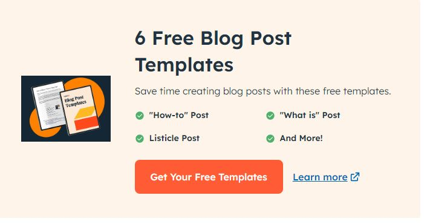
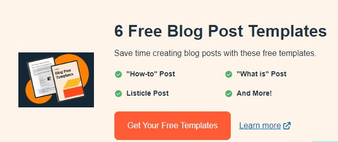
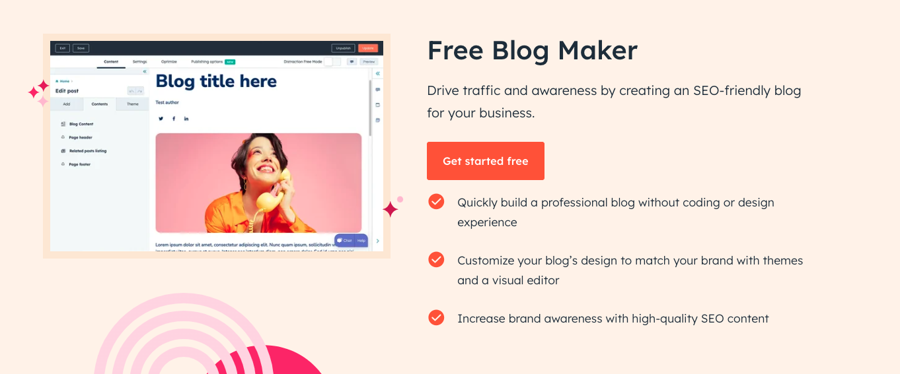
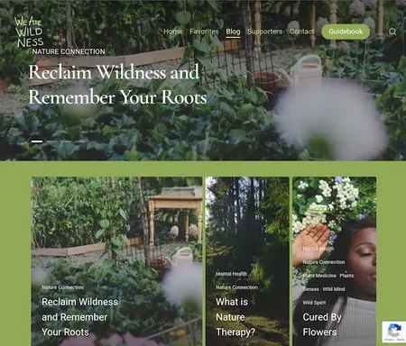

- understand your audiences
Before you start writing your blog post, make sure you have a clear understanding of
your target audience. To do so, take the following steps.
Ask yourself exploratory questions.
To discover your audience, ask questions like: Who are they? Are they like me, or do
I know someone like them? What do they want to know about? What will resonate with them?
Jot down your notes in a notepad or a document. This is the time to brainstorm
audience attributes from scratch, no matter how out of left field they may feel. You
should also think about your audience's age, background, goals, and challenges at this stage.

Carry out market research.
Doing market research sounds like a big task, but in truth, it can be as
simple as accessing a social media platform and browsing user and blog profiles that match with
your potential audience.
Use market research tools to begin uncovering more specific information about your
audience — or to confirm a hunch or a piece of information you already knew. For
instance, if you wanted to create a blog about work-from-home hacks, you can make
the reasonable assumption that your audience will be mostly Gen Zers and But it’s important to confirm this information through research.
Create formal buyer personas.
Once you’ve brainstormed and carried out market research, it’s time to create formal
buyer personas. It’s important because what you know about your buyer personas and
their interests will inform the brainstorming process for blog posts.
"Buyer personas aren’t just for direct marketing. They can be a
handy way to keep a human in mind while you’re writing. If you’ve got other marketing or sales teams handy,
coordinate your personas," says Curtis del Principe, user acquisition manager at HubSpot. "Chances are that your existing customers are exactly the kind of people you want to attract with your writing in the first place. Your sales and service teams can also have great insight into these people’s needs and pain points."
You might, however, want to give them information about how to adjust their social media approach (for example — from what may be a casual, personal approach to a more business-savvy, networking-focused approach). That kind of tweak is what helps you publish content about the topics your audience really wants and need
Don't have buyer personas in place for your business? Here are a few resources to help you get started:
- know your competition
It’s worth taking a look at popular, highly reviewed blogs because their strategy and execution is what got them to grow in credibility. The purpose of doing this isn’t to copy these elements, but to gain better insight into what readers appreciate in a quality blog.
When you find a competitor’s blog, take the following steps:
Determine whether they’re actually a direct competitor.
A blog’s audience, niche, and specific slant determine whether they're actually your competitor. But the most important of these is their audience. If they serve a completely different public than you, then they’re likely not a competitor. That is why it’s important to define your buyer personas before taking other steps in the blog creation process.
Look at the blog’s branding, color palette, and theme.
Once you determine that they’re your competitor, it’s time to take note of their techniques so that you can capture a similar readership. Colors and themes play a huge role in whether you seem like part of a niche — for instance, a blog about eco-friendly products should likely use earthy tones instead of bright, unnatural colors such as neon yellow or pink.
Analyze the tone and writing style of the competition.
Take note of your competition’s copywriting. Is it something you feel like you can successfully emulate? Does it ring true to the type of blog you’d like to create? What do readers most respond to? For most, creating a tech blog might be an excellent idea, but if journalistic, review-based writing doesn’t work for you, then that might not be a good fit. Be aware of what you can feasibly execute or hire freelance writers.
- Determine what topic you'll cover
Before you start writing your blog post, make sure you have a clear understanding of
your target audience. To do so, take the following steps.
Ask yourself exploratory questions.
To discover your audience, ask questions like: Who are they? Are they like me, or do
I know someone like them? What do they want to know about? What will resonate with them?
Jot down your notes in a notepad or a document. This is the time to brainstorm
audience attributes from scratch, no matter how out of left field they may feel. You
should also think about your audience's age, background, goals, and challenges at this stage.
Carry out market research.
Doing market research sounds like a big task, but in truth, it can be as
simple as accessing a social media platform and browsing user and blog profiles that match with
your potential audience.
Use market research tools to begin uncovering more specific information about your
audience — or to confirm a hunch or a piece of information you already knew. For
instance, if you wanted to create a blog about work-from-home hacks, you can make
the reasonable assumption that your audience will be mostly Gen Zers and But it’s important to confirm this information through research.
Create formal buyer personas.
Once you’ve brainstormed and carried out market research, it’s time to create formal
buyer personas. It’s important because what you know about your buyer personas and
their interests will inform the brainstorming process for blog posts.
"Buyer personas aren’t just for direct marketing. They can be a
handy way to keep a human in mind while you’re writing. If you’ve got other marketing or sales teams handy,
coordinate your personas," says Curtis del Principe, user acquisition manager at HubSpot. "Chances are that your existing customers are exactly the kind of people you want to attract with your writing in the first place. Your sales and service teams can also have great insight into these people’s needs and pain points."
For instance, if your readers are Millennials looking to start a business, you probably don't need to provide them with information about getting started on social media — most of them already have that down.
You might, however, want to give them information about how to adjust their social media approach (for example — from what may be a casual, personal approach to a more business-savvy, networking-focused approach). That kind of tweak is what helps you publish content about the topics your audience really wants and need
Don't have buyer personas in place for your business? Here are a few resources to help you get started:
Check out your competition.
What better way to draw inspiration than to look at your well-established competition?
It’s worth taking a look at popular, highly reviewed blogs because their strategy and execution is what got them to grow in credibility. The purpose of doing this isn’t to copy these elements, but to gain better insight into what readers appreciate in a quality blog.
When you find a competitor’s blog, take the following steps:
Determine whether they’re actually a direct competitor.
A blog’s audience, niche, and specific slant determine whether they're actually your competitor. But the most important of these is their audience. If they serve a completely different public than you, then they’re likely not a competitor. That is why it’s important to define your buyer personas before taking other steps in the blog creation process.
Look at the blog’s branding, color palette, and theme.
Once you determine that they’re your competitor, it’s time to take note of their techniques so that you can capture a similar readership. Colors and themes play a huge role in whether you seem like part of a niche — for instance, a blog about eco-friendly products should likely use earthy tones instead of bright, unnatural colors such as neon yellow or pink.
Analyze the tone and writing style of the competition.
Take note of your competition’s copywriting. Is it something you feel like you can successfully emulate? Does it ring true to the type of blog you’d like to create? What do readers most respond to? For most, creating a tech blog might be an excellent idea, but if journalistic, review-based writing doesn’t work for you, then that might not be a good fit. Be aware of what you can feasibly execute or hire freelance writers.
Determine what topics you’ll cover.
Before you write anything, pick a topic you’d like to write about. The topic can be pretty general to start as you find your desired niche in blogging.
Here are some ways to choose topics to cover.
Here are some ways to choose topics to cover.
One easy way to choose topics for your blog is to simply learn what other blogs are writing about. After you determine your competitors, go through their archive and category pages, and try to find out which topics they most often publish content about. From there, you can create a tentative list to explore further. You might find, for instance, that a competitor only covers surface-level information about a subject. In your blog, you can dive more deeply and offer more value to readers.
Choose topics you understand well.
No matter what type of blog you start, you want to ensure you know the topic well enough to write authoritatively about it. Rather than choosing a topic you’ll need to research as you write, think about those that come most naturally to you. What has your professional experience been like so far? What are your hobbies? What did you study in college? These can all give rise to potential topics you can cover in depth.
Ensure the topics are relevant to your readership.
You may find that you hold deep expertise in various topics, but how relevant are they to the audience you understood back in step one?
Del Principe suggests checking in with sales and service teams as well. "What kinds of things do they wish customers already knew? What kinds of questions do they get asked a thousand times? What kind of objections come up from potential customers, and how do they address them?"
If you’re not serving their needs, then you’d be shouting into a void — or, worse, attracting the wrong readership. For that reason, after identifying the topics you can feasibly write about, ask yourself whether those are subjects your audience would like
Do preliminary keyword research.
Keyword research is the process of searching for topics using a keyword research tool, then determining whether there is demand by looking at each topic’s (or keyword’s) search volume. If you found the perfect topics that are the perfect cross between your expertise and your reader’s needs, you’ve struck gold — but the gold will have no value unless people are searching for those terms. Only then can you capture the audience that is waiting out there.

- identify your unique angle
What perspective do you bring that makes you stand out from the crowd? This is key to determining the trajectory of your blog’s future, and there are many avenues to choose in the process.
Here’s how you can find your unique selling proposition in crowded blogging niches:
Write a professional and personal bio.
Knowing your own history and experience is essential to determine your unique slant. To get started, write a professional bio that explains, at length, who you are and which experiences most inform your blogging efforts. While I could write a lengthy exposition about my childhood, that history isn’t essential unless I’m launching a blog about raising children.
What unique experience makes you a trusted expert or thought leader on the topic? You can use your answers to that question to find your angle. Use this information to populate your “About me” page on your blog and share more about yourself.
Determine the special problem you will solve for readers.
Your readers won’t trust you or return to you unless you actively help them solve a problem. As you try to find your angle, think about ways you can help your audience surmount challenges typically associated with the topics you’ve chosen for your blog. For instance, if you’re creating a blog about sustainability, then you might help readers learn how they can compost organic materials in their home.
Choose an editorial approach.
Will you share your opinions on trending debates? Teach your readers how to do something? Compare or share original research? The editorial approach you choose will in part be informed by the topics you cover on your blog and the problems you’re helping your readers solve. If your blog is about marketing trends and your goal is to keep marketers up-to-date on the latest changes, then your editorial approach should be journalistic in nature. This is only one example of how to choose a technique.
- Name your blog.
This is your opportunity to get creative and make a name that gives readers an idea of what to expect from your blog. Some tips on how to choose your blog name include:
Keep your blog name easy to say and spell
- create your blog domain
No need to get complicated at all with your name, though it might be tempting, since there are so many blogs out there. While choosing a unique name is essential, it’s also important to choose one that is easy to memorize for readers. It should also be simple to remember as an URL (which will come into play in the next step).
A domain is a part of the web address nomenclature someone would use to find your website or a page of your website online.
Your blog‘s domain will look like this: www.yourblog.com. The name between the two periods is up to you, as long as this domain name doesn’t yet exist on the internet.
Want to create a subdomain for your blog? If you already own a cooking business at www.yourcompany.com, you might create a blog that looks like this: blog.yourcompany.com. In other words, your blog's subdomain will live in its own section of yourcompany.com.
Some CMS platforms offer subdomains as a free service, where your blog lives on the CMS, rather than your business's website. For example, it might look like this: yourblog.contentmanagementsystem.com. However, to create a subdomain that belongs to your company website, register the subdomain with a website host.
Most website hosting services charge very little to host an original domain — in fact, website costs can be as inexpensive as $3 per month when you commit to a 36-month term.
Pro Tip: You can connect your custom domain to free hosting with HubSpot’s free CMS or in premium editions of Content Hub. This includes access to built-in security features and a content delivery network.
Here are five other popular web hosting services to choose from:
- Go daddy
- host gator
- dream host
- blue host
- ipage
- choose a cms and se up your blog
A CMS (content management system) is a software application that allows users to build and maintain a website without having to code it from scratch. CMS platforms can manage domains (where you create your website) and subdomains (where you create a webpage that connects to an existing website).
HubSpot customers host web content via Content Hub. Another popular option is a self-hosted WordPress website on a hosting site such as WP Engine. Whether you create a domain or a subdomain to start your blog, you'll need to choose a web hosting service after you pick a CMS.
Pro Tip: You can get started for free with HubSpot’s free blog maker. Our free CMS offers everything you need to get started– including hosting, a visual editor, and hundreds of free and paid themes to choose from.

Once you have your domain name set up, customize the appearance of your blog to reflect the theme of the content you plan on creating and your brand.
For example, if you're writing about sustainability and the environment, green might be a color to keep in mind while designing your blog.

f you already manage a website and are writing the first post for that existing website, ensure the article is consistent with the website in appearance and subject matter. Two ways to do this are including your:
Once you have your blog set up, the only thing missing is the content. While the design and layout are fun and functionally necessary, it's the content that will draw your readers in and keep them coming back. So how do you actually go about writing one of these engaging and informational pieces?
You’ve got the technical and practical tidbits down — now it’s time to write your very first blog post. And nope, this isn’t the space to introduce yourself and your new blog (i.e. “Welcome to my blog! This is the topic I’ll be covering. Here are my social media handles. Will you please follow?”).
Start with “low-hanging fruit,” writing about a highly specific topic that serves a small segment of your target audience.
That seems unintuitive, right? If more people are searching for a term or a topic, that should mean more readers for you.
But that’s not true. If you choose a general and highly searched topic that’s been covered by major competitors or more established brands, it’s unlikely that your post will rank on the first page of search engine results pages (SERPs). Give your newly born blog a chance by choosing a topic that few bloggers have written about.
- Choose a topic you’re passionate and knowledgeable about
Before you write anything, pick a topic for your blog post. The topic can be pretty general to start. For example, if you're a company that sells a CRM for small-to-enterprise businesses, your post might be about the importance of using a single software to keep your marketing, sales, and service teams aligned
Pro tip: You may not want to jump into a “how-to” article for your first blog post.
Your credibility hasn’t been established yet. Before teaching others how to do something, you’ll first want to show that you’re a leader in your field and an authoritative source.
For instance, if you‘re a plumber writing your first post, you won’t yet write a post titled “How to Replace the Piping System in your Bathroom.” First, you’d write about modern faucet setups, or tell a particular success story you had rescuing a faucet before it flooded a customer's house.
-
List (“Listicle”):: 5 ways to fix a leaky fauce
-
Curated Collection: 10 faucet and sink brands to consider today
-
SlideShare Presentation:5 types of faucets to replace your old one (with pictures)
-
News Piece:New study shows X% of people don't replace their faucet frequently enough
If you're having trouble coming up with topic ideas, a good topic brainstorming session should help. In the post I’ve linked, my colleague walks you through a helpful process for turning one idea into many. Similar to the “leaky faucet” examples above, you would “iterate off old topics to come up with unique and compelling new topics.”
- Changing the topic scop
- Choosing a new audience
- Adjusting your time frame
- Taking a positive/negative approach
- Introducing a new format
And if you’re still stuck, let’s take a look at some first blog post idea examples.
The Difference Between [Niche Topic] and [Niche Topic], Explained by a [Niche Expert]
- The Difference Between SEM and SEO, Explained by a Marketing Expert
- The Difference Between Sedans and Coupes, Explained by a Car Mechanic
- The Difference Between Baking and Broiling, Explained by a Professional Baker
The 10 Best and Worst [Niche Tools] for [Niche Activity]
- The 10 Best and Worst Writing Software for Fiction Writing
- The 10 Best and Worst CRMs for Nurturing Prospects
- The 10 Best and Worst Family Cars for Cross-Country Roadtrips
8 [Niche Activity] Common Mistakes (+ Ways to Fix Them)
- 8 Non-Fiction Writing Common Mistakes (+ Ways to Fix Them)
- 8 Salmon Broiling Common Mistakes (+ Ways to Fix Them)
- 8 Car Maintenance Common Mistakes (+ Ways to Fix Them)
9 Proven Tips for [Niche Activity]
- 9 Proven Tips for Checking Plumbing Problems under Your Kitchen Sink
- 9 Proven Tips for Writing a Non-Fiction Bestseller
- 9 Proven Tips for Doing DIY Car Maintenance
Why We/I Switched from [Niche Tool] to [Niche Tool] (Comparison)
- Why We Switched from Pipedrive to HubSpot (Comparison)
- Why I Switched from Microsoft Word to Scrivener (Comparison)
- Why We Switched from iMacs to Surface Studio (Comparison)
[Niche Tool] vs [Niche Tool]: Which [Tool] is Best for You?
- Zendesk vs Freshcaller: Which Call Software is Best for You?
- Air Fryer vs Convection Oven: Which One is Best for You?
- Mazda Miata vs Toyota Supra: Which Sports Car is Best for You?
The Ultimate Roundup of [Niche Activity] Tips and Tricks
- The Ultimate Roundup of Novel Writing Tips and Tricks
- The Ultimate Roundup of Macaroon Baking Tips and Tricks
- The Ultimate Roundup of Solo Traveling Tips and Tricks
Want some real examples of blog posts? See what your first blog post can look like based on the topic you choose and the audience you're targeting.
Target a low-volume keyword to optimize around.
Finding a keyword with low searches in Google (I recommend sticking to about 10 to 150 monthly searches). These topics offer less competition and should therefore allow your new blog post to rank more easily.
To choose a topic, you can either do a traditional brainstorming session or carry out keyword research. I suggest the latter because you can actually see how many people are looking for that topic.
Now, don’t be intimidated by the term “keyword research.” It’s not just for marketers, but for new bloggers, too. And it’s really easy to do.
To jumpstart your keyword research, first begin by identifying the general topic of your blog.
Say you’re a plumber. Your general, high-level topic might be “plumbing” (67K monthly searches).
Next, put this term into a keyword research tool such as:
Run that keyword in the keyword research tool again. Look at the related keywords. Find one with a lower search volume. Do that again.
When you run this term through the tool, a list of related keywords will appear. Scan the list and choose one with a lower search volume. For this example, we’ll use “under sink plumbing” (1.4K monthly searches).
For this example, we’ll settle on “plumbing problems under kitchen sink” (10 monthly searches). That’s the topic for our first post.
TLDR; Choose a low-volume, low-competition keyword that will ensure your first post ranks.
For more help on keyword research, here are more resources you can use:
3. Google the term to understand your audience’s search intent.
You’ve got your topic — now, you need to check that the user’s search intent would be fulfilled by a blog post.
What does that mean?
If someone is looking for “plumbing problems under a kitchen sink,” they might be looking for a tutorial, a diagram, an article, or a product that can fix the issue. If they’re looking for the first three, you’re good — that can be covered in a blog post. A product, however, is different, and your blog post won’t rank.
How do you double-check search intent?
Google the term and look at the results. If other articles and blog posts rank for that term, you’re good to go. If you only find product pages or listicles from major publications, then find a new topic to cover in your first post.
Consider the term “under sink plumbing bathroom” (30 monthly searches). It seemed like a perfect fit because it had low monthly searches.
Upon Googling the term, I found product carousels, product pages from Home Depot and Lowes, and guides written by major publications. (You’ll also want to avoid topics that have been covered by major publications, at least for now.)
TLDR; Before writing your first blog post about a low-volume topic, double-check the user intent by Googling the keyword. Also, don’t forget to take a look at who’s written about that topic so far. If you see a major brand, consider writing about another topic.
4. Find questions and terms related to that topic.
You’ve got a highly unique topic that’s been covered by just a few people so far. It’s time to flesh it out by covering related or adjacent topics.
Use the following tools:
Answer the Public: When you place your keyword into this tool, it will give you a list of questions related to that term.
Google: Google is your best friend. Search for the term and look under “People also ask” and “People also search for.” Be sure to touch upon those topics in the post.
You can also use these keyword research tools we mentioned above in step one.
Come up with a working title.
You might come up with a few different working titles — in other words, iterations of approaching that topic to help you focus your writing.
For example, you may decide to narrow your topic to “Tools for Fixing Leaky Faucets” or “Common Causes of Leaky Faucets.” A working title is specific and will guide your post so you can start writing.
Let's take a real post as an example: "How to Choose a Solid Topic for Your Next Blog Post."
Let's take a real post as an example: "How to Choose a Solid Topic for Your Next Blog Post."
See that evolution from topic, to working title, to final title? Even though the working title may not end up being the final title (more on that in a moment), it still provides enough information so you can focus your blog post on something more specific than a generic, overwhelming topic.
Create an outline.
Sometimes, blog posts can have an overwhelming amount of information — for the reader and the writer. The trick is to organize the info in a way so readers aren‘t intimidated by length or amount of content. This organization can take multiple forms — sections, lists, tips — whatever’s most appropriate. But it must be organized!
Let's take a look at the post, "How to Use Snapchat: A Detailed Look Into HubSpot’s Snapchat Strategy." There‘s a lot of content in the piece, so it’s broken up into a few sections using descriptive headers. The major sections are separated into subsections that go into more detail, making the content easier to read.
To complete this step, all you really need to do is outline your post. This way, before you start writing, you'll know which points you want to cover and the best order to do so. And to make things even easier, you can download and use our free blog post templates, which are pre-organized for six of the most common blogs. Just fill in the blanks!
7. Write an intro (and make it captivating).
We've written more specifically about writing captivating introductions in the post "How to Write an Introduction," but let's review, shall we?
First, grab the reader‘s attention. If you lose the reader in the first few paragraphs — or even sentences — of the introduction, they’ll stop reading (even before they've given your post a fair shake). You can do this in a number of ways: tell a story or a joke, be empathetic, or grip the reader with an interesting fact or statistic.
Then, describe the purpose of your post and explain how it will address a problem the reader may be experiencing. This will give the reader a reason to continue reading and show them how the post will help them improve their work or lives.
Here‘s an example of an intro I think does a good job of attracting a reader’s attention right away:
“Blink. Blink. Blink. It's the dreaded cursor-on-a-blank-screen experience that all writers — amateur or professional, aspiring or experienced — know and dread. And of all times for it to occur, it seems to plague us the most when trying to write an introduction.”
8. Build out each section of your outline.
The next step — but not the last — is actually writing the content. We can't forget about that, of course
Now that you have your outline or template, you're ready to fill in the blanks. Use your outline as a guide and expand on all points as needed. Write about what you already know, and if necessary, conduct additional research to gather more information, examples, and data to back up your points, while providing proper attribution when incorporating external sources. When you do, always try to find accurate and compelling data to use in your post.
If you‘re having trouble stringing sentences together, you’re not alone. Finding your “flow” can be challenging for a lot of folks. Luckily, there are a ton of tools you can lean on to help you improve your writing. Here are a few to get you started:
- HubSpot's AI Blog Writer: Tools like HubSpot's AI Blog Writer can be a valuable asset for beginners and seasoned bloggers alike. It simplifies the process of creating SEO-friendly and engaging blog content, which is crucial for connecting with your audience and enjoying the benefits of blogging.
- Power Thesaurus: Stuck on a word? Power Thesaurus is a crowdsourced tool that provides users with a number of alternative word choices from a community of writers.
- Power Thesaurus: Stuck on a word? Power Thesaurus is a crowdsourced tool that provides users with a number of alternative word choices from a community of writers.
- Power Thesaurus: Stuck on a word? Power Thesaurus is a crowdsourced tool that provides users with a number of alternative word choices from a community of writers.
You can also refer to our complete list of tools for improving your writing skills. And if you're looking for more direction, the following resources are chock-full of valuable writing advice:
9. Publish and promote your first post any way you can.
9. Publish and promote your first post any way you can.
As a new blogger, you likely don’t have a social media following yet. Thankfully, you don’t need a huge following before you can create a promotion strategy.
A promotion strategy is your master plan for how you create, post, and engage with your social media content. It helps you take advantage of social and digital technologies to share your business, or in this case, your content. Having a solid promotional strategy offers your audience from different marketing channels more ways to find your blog posts.
Here are more blog post promotion resources:
What makes a good blog post?
Before you write a blog, make sure you know the answers to questions like, “Why would someone keep reading this entire blog post?” and “What makes our audience come back for more?”
To start, a good blog post is interesting and educational. Blogs should answer questions and help readers resolve a challenge they're experiencing — and you have to do so in an interesting way.
It‘s not enough just to answer someone’s questions — you also have to provide actionable steps while being engaging. For instance, your introduction should hook the reader and make them want to continue reading your post. Then, use examples to keep your readers interested in what you have to say.
Remember, a good blog post is interesting to read and provides educational content to audience members.
Want to learn how to apply blogging and other forms of content marketing to your business?
Include H2s to arrange ideas.
When you begin typing your blog content, it’s important that you divide paragraphs into sections that make it easier for the reader to find what they need.
If you’re just starting out, then focus on the overarching H2s you want to talk about, and you’ll be able to branch off into subheaders and more naturally as you continue.
Center your images.
This is a simple practice that can help your content look more professional with little effort. Centering your images keeps the reader’s attention drawn to the subject — not searching for elsewhere.
Centering also looks better when translating from PC to mobile devices. As formatting transitions to small screens or windows, a centered image will remain the focal point.
3. Add alt text.
So those images you centered earlier, make sure you have descriptive alt text for them, too.
Image alt text allows search engines, like Google, to crawl and rank your blog post better than pages lacking the element. It also leads readers to your blog post if the keywords included are what they searched for in the first place.
Besides SERP features, image alt text is beneficial to readers by providing more accessibility. Image alt text allows people to better visualize images when they can’t see them, and with assistive technology, can be auditorily read aloud for people to enjoy.
Keep your sentences short and concise.
When you begin working on the body of your blog post, make sure readers can clearly understand what you’re trying to accomplish.
You shouldn’t feel pressure to elongate your post with unnecessary details, and chances are that if you keep it concise, readers will derive more value from your work.
Use media with a purpose.
Break up the monotony of your blog post with some multimedia content where seen fit.
Your reader will enjoy visiting a blog page with images, videos, polls, audio or slideshows as opposed to a page of black and white text.
It also makes it more interactive and improves your on-page search engine optimization (SEO).
Now, do you want some real examples of blog posts? See what your first blog post can look like based on the topic you choose and the audience you're targeting.
List-based posts are sometimes called “listicles,” a mix of the words “list” and “article.” These are articles that deliver information in the form of a list. A listicle uses sub-headers to break down the blog post into individual pieces, helping readers skim and digest your content more easily.
As you can see in the example from our blog, listicles can offer various tips and methods for solving a problem.
Thought leadership posts allow you to share your expertise on a particular subject matter and share firsthand knowledge with your readers.
These pieces — which can be written in the first person, like the post shown above — help you build trust with your audience so people take your blog seriously as you continue to write for it.
Curated Collection Post
Curated collections are a special type of listicle blog post. Rather than sharing tips or methods for doing something, this type of blog post shares a list of real examples that all have something in common in order to prove a larger point.
In the example post above, Listverse shares eight real examples of evolution in action among eight different animals — starting with the peppered moth.
Slide Presentation
HubSpot Slides is a presentation tool that helps publishers package a lot of information into easily shareable slides. Think of it like a PowerPoint, but for the web. With this in mind, SlideShare blog posts help you promote your SlideShare so that it can generate a steady stream of visitors.
Unlike blogs, slide decks don't often rank well on search engines, so they need a platform for getting their message out there to the people who are looking for it. By embedding and summarizing your SlideShare on a blog post, you can share a great deal of information and give it a chance to rank on Google at the same time.
Need some slideshow ideas? In the example above, we turned our company's “Culture Code” into a slides presentation that anyone can look through and take lessons from, and then promoted it in a blog post.
Newsjacking Post
“Newsjacking” is a nickname for “hijacking” your blog to break important news related to your industry. Therefore, the newsjack post is a type of article whose sole purpose is to garner consumers' attention and, while offering them timeless professional advice, prove your blog is a trusted resource for learning about the big things that happen in your industry.
The newsjack example above was published by Houzz, a home decor merchant and interior design resource, about a new mobile app that was launched just for interior designers. Houzz didn‘t launch the app, but the news of its launching is no less important to Houzz’s audience.
Infographic Post
The infographic post serves a similar purpose as the SlideShare post — the fourth example, explained above — in that it conveys information for which plain blog copy might not be the best format.
The infographic post serves a similar purpose as the SlideShare post — the fourth example, explained above — in that it conveys information for which plain blog copy might not be the best format.The infographic post serves a similar purpose as the SlideShare post — the fourth example, explained above — in that it conveys information for which plain blog copy might not be the best format.
For example, when you're looking to share a lot of statistical information (without boring or confusing your readers), building this data into a well-designed, even engaging infographic can keep your readers engaged with your content. It also helps readers remember the information long after they leave your website.
How-to Post
For this example, you need not look any further than the blog post you‘re reading right now! How-to guides like this one help solve a problem for your readers. They’re like a cookbook for your industry, walking your audience through a project step by step to improve their literacy on the subject
The more posts like this you create, the more equipped your readers will be to work with you and invest in the services you offer.
Guest Post
1. Draw from your buyer personas and what you know about your audience.
Before you start writing your blog post, make sure you have a clear understanding of your target audience.
Ask questions like: What do they want to know about? What will resonate with them?
This is where the process of creating buyer personas comes in handy. Consider what you know about your buyer personas and their interests while you're coming up with a topic for your blog post.
For instance, if your readers are millennials looking to start a business, you probably don't need to provide them with information about getting started in social media — most of them already have that down.
You might, however, want to give them information about how to adjust their social media approach (for example — from what may be a casual, personal approach to a more business-savvy, networking-focused approach). That kind of tweak is what helps you publish content about the topics your audience really wants and needs.
If you haven’t developed buyer personas yet, I’ve found that it’s easiest to get started by gathering the information you already have about your audience and looking for trends. Sending out feedback surveys and interviewing followers can also be helpful.
Does your blog attract a specific age group? Does your audience live in a certain region? How do readers typically discover your content? Finding answers to these questions can help you get a better idea of who your buyer persona is
Don't have buyer personas in place for your business? Here are a few resources to help you get started:
Pull from your content strategy and/or brainstormed topics.
If you already have a pre-existing portfolio to look back on, it would benefit you to pull from those brainstormed post ideas or previous content strategy.
If you already have a pre-existing portfolio to look back on, it would benefit you to pull from those brainstormed post ideas or previous content strategy.
If you already have a pre-existing portfolio to look back on, it would benefit you to pull from those brainstormed post ideas or previous content strategy.
Identify what’s missing from the existing discourse.
Fill in the gaps of the existing discourse in the topic of your choosing.
You want to meet a need that hasn’t already been met in your topic cluster. Otherwise, you run the risk of writing content for topics that are already over-saturated.It’s hard to beat saturated search queries when you’re trying to rank against high authority publications — but not impossible if your content is answering the queries the competition hasn’t.
To discover what’s missing within a topic, I conduct a competitive analysis to see what my competitors offer in their content and how I can make my blog post better. Here are some things to look out for:
- Unanswered user queries
- Content depth
- Content freshness
- Media richness
- User experience
If your competitors are lacking in any of these areas, you can use that to your advantage and focus on them when writing your blog post.
Another way to differentiate your blog is by offering original data, quotes, or perspectives. Some of my best performing posts have come from getting a unique quote from an industry expert.
Choose what type of blog post you’re writing.
There are several types of blog posts you can create, and they each have different formats to follow.
Six of the most common formats include:
- The List-Based Post
- The “What Is” Post
- The “What Is” Post
The Pillar Page Post (“Ultimate Guide”)
- The Newsjacking Post
- The Infographic Post
- The “How-To” Post
Generate a few different titles and choose the best one.
Your blog title should tell readers what to expect, yet it should leave them wanting to know more — confusing, right?
This is why when you’re coming up with a blog post title that you should brainstorm multiple ones instead of just one. I find it helpful to share these titles with a couple coworkers to get their feedback and see which one is most engaging to them.
I’ve also enlisted the help of ChatGPT to generate sample blog post titles by inputting a prompt like, “Write a list of blog titles about [topic].” Even if it doesn’t give you exactly what you want, it can still get ideas flowing.
I’ve also enlisted the help of ChatGPT to generate sample blog post titles by inputting a prompt like, “Write a list of blog titles about [topic].” Even if it doesn’t give you exactly what you want, it can still get ideas flowing.
I use keyword research tools, like Ahrefs and Semrush, to find the best words for my blog post. To find the right keywords, I focus on the following elements:
- Relevance to topic and search intent
- How authoritative my blog is on the topic
- The amount of search traffic my blog could gain
Remember, your outline should serve as a guide to make writing your blog post easier, so make sure you include all the important points you want to discuss and organize them in a logical flow.
I already told you how to build out your outline earlier in the post, so we'll quickly go over the main points once more.
You‘ve already outlined your main headings and subheadings, so now’s the time to add the body.
Write about what you already know, and if necessary, conduct additional research to gather more information, examples, and data to back up your points, while providing proper attribution when incorporating external sources. When you do, always try to find accurate and compelling data to use in your post.
This is also your opportunity to show personality in your writing. Blog posts don‘t have to be strictly informational, they can be filled with interesting anecdotes and even humor if it serves a purpose in expressing your ideas. It also factors into creating and maintaining your blog’s brand voice.
Don‘t be discouraged if you’re having trouble stringing sentences together, you're not alone. Finding your “flow” can be challenging, but there are many tools to ease the process. Software such as HubSpot's Free AI Blog Writer can help you generate copy for your blog post. You can even use it to outline and generate title ideas.
9. Add images and other media elements to support your ideas.
The editing process is an important part of blogging — don't overlook it. I tend to self-edit while I write, but it’s essential to get a second pair of eyes on your post before publishing.
Choose a visually appealing and relevant image for your post. As social networks treat content with images more prominently, visuals are more responsible than ever for the success of your blog conten
For help selecting an image for your post, read "How to Select the Perfect Image for Your Next Blog Post" and pay close attention to the section about copyright la
In a well-formatted and visually-appealing blog post, you'll notice that header and sub-headers are used to break up large blocks of text — and those headers are styled consistently.
Screenshots should always have a similar, defined border so they don‘t appear as if they’re floating in space — that style should stay consistent from post to post.
Upload your post into your CMS.
I also use this step as an opportunity to double check my post for any errors that were potentially missed during the proofreading process. It’s especially important to preview your post before publishing to make sure there aren’t any formatting issues.
You filled out your blog post with all the optimized content you can, now is the time to publish it in your content management system.
Determine a conversion path (what you want your audience to do next).
A conversion path is a process by which an anonymous website visitor becomes a known lead. It sounds simple enough, but creating an effective conversion path requires a clear understanding of your target audience and their needs.
Add calls to action to guide your audience to take action.
Call to action (CTA) are a part of a webpage, advertisement, or piece of content that encourages the audience to do something. You can add them to your blog post to guide your reader with “next steps” or a conversion path.
- Subscribe to your newsletter to see when you publish more content.
- Join an online community in your blog domain.
- Learn more about a topic with downloadable content.
- Try something for free or discount to convert readers to customers.
Link to other relevant blog posts within your content.
When you’re completing your blog post, you should link relevant content throughout it. An effective way to do this is to link within the same content cluster.
One thing I do to make finding relevant links easier is going to my search browser and typing “site:website.com: keyword.” By doing this, you can find all the posts you have published on that topic.
Optimize for on-page SEO.
Don‘t obsess over how many keywords to include. If there are opportunities to incorporate keywords you’re targeting, and it won‘t impact reader experience, do it. If you can make your URL shorter and more keyword-friendly, go for it. But don’t cram keywords or shoot for some arbitrary keyword density — Google's smarter than that
Meta descriptions are the descriptions below the post‘s page title on Google’s search results pages. They provide searchers with a short summary of the post before clicking into it. They are ideally between 150-160 characters and start with a verb, such as “Learn,” “Read,” or “Discover.”
While meta descriptions no longer factor into Google‘s keyword ranking algorithm, they give searchers a snapshot of what they’ll get from reading the post and help improve your clickthrough rate from search.
Most blogging software uses your post title as your page title, which is the most important on-page SEO element at your disposal. But if you've followed our formula so far, you should already have a working title that will naturally include keywords or phrases your target audience is interested in.
Don‘t over-complicate your title by trying to fit in keywords where they don’t naturally belong. With that said, if there are clear opportunities to add keywords you‘re targeting to your post title and headers, feel free to take them. Also, try to keep your headlines short — ideally, under 65 characters — so they don’t get truncated in the search engine results.
"The first component of a good title is that it needs to be scannable. People aren’t reading every word of your thoughtfully crafted headline. If you’re following a search-focused strategy, make sure to include the keyword at the beginning," Del Principe says.
Anchor text is the word or words that link to another page — either on your website or on another website. Carefully select which keywords you want to link to other pages on your site because search engines take that into consideration when ranking your page for certain keywords.
It‘s also important to consider which pages you link to. Consider linking pages that you want to rank for a specific keyword. You could end up getting it to rank on Google’s first page of results instead of its second page — and that isn’t small potatoe
Alt text conveys the “why” of an image as it relates to the content of your blog post to Google. By adding alt text correlating to the topic clusters and keywords of the post, Google can better direct users’ searches to you.
- Total traffic per post
- Average CTR
- Average SERP position
- Traffic source breakdown
- Number of search queries per post
- Average comments per post
- Social shares per post
- New blog leads
- Conversion rate
uick Blog Writing Tips
If you’re feeling stuck as a new writer, don’t give up. It gets easier with practice. Whether you’re struggling with writer's block or wanting some ways to add depth to your content, here are some quick tips I compiled to help take your blog writing to the next level:
When you’re facing writer’s block, start with what you know. Not only will sharing personal anecdotes help you get ideas flowing, but it can also keep your readers engaged with what you’re saying
When you’re facing writer’s block, start with what you know. Not only will sharing personal anecdotes help you get ideas flowing, but it can also keep your readers engaged with what you’re saying
When you’re facing writer’s block, start with what you know. Not only will sharing personal anecdotes help you get ideas flowing, but it can also keep your readers engaged with what you’re saying
I’ve also reached out to connections on LinkedIn to see if they can provide a quote or know someone who can. HARO can also be a great resource if you need a quote in a pinch.
Ready to blog?
Blogging can help you build brand awareness, become a thought-leader and expert in your industry, attract qualified leads, and boost conversions. Follow the steps and tips we covered above to begin publishing and enhancing your blog today.
Editor's note: This post was originally published in October 2013 and has been updated for comprehensiveness.
-
Customize the look of your blog.
-
Write your first blog post.